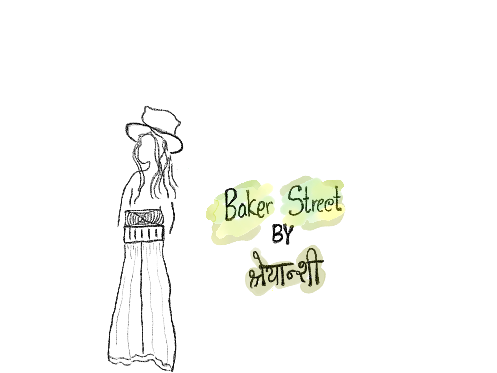
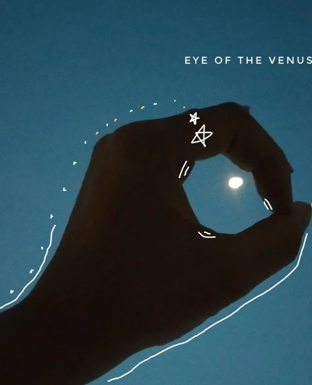
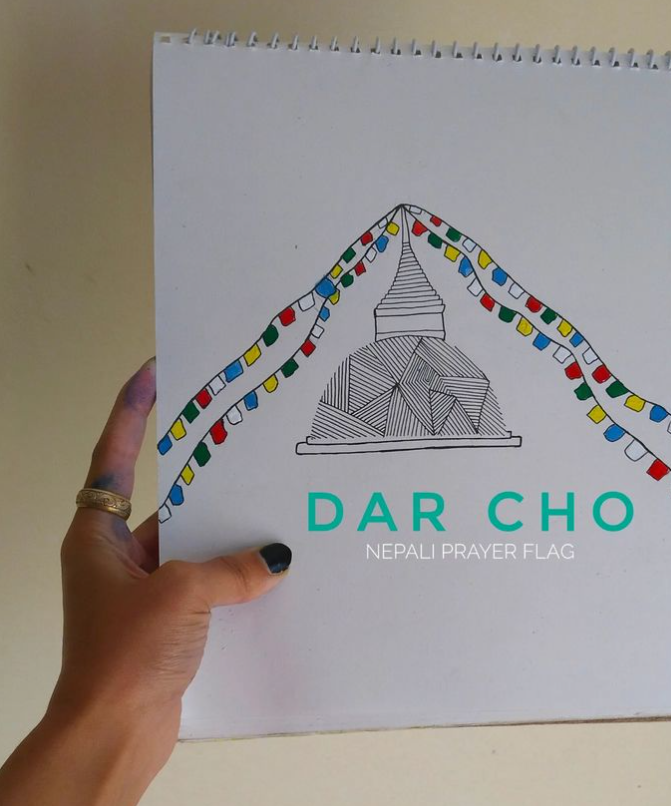
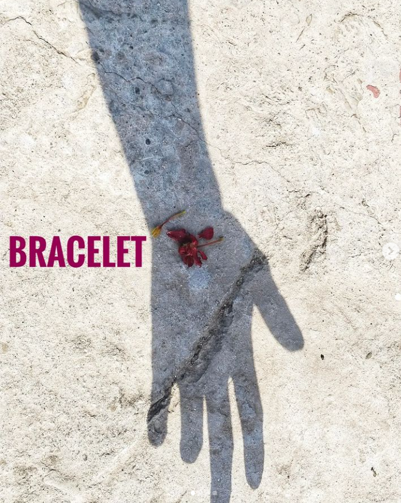
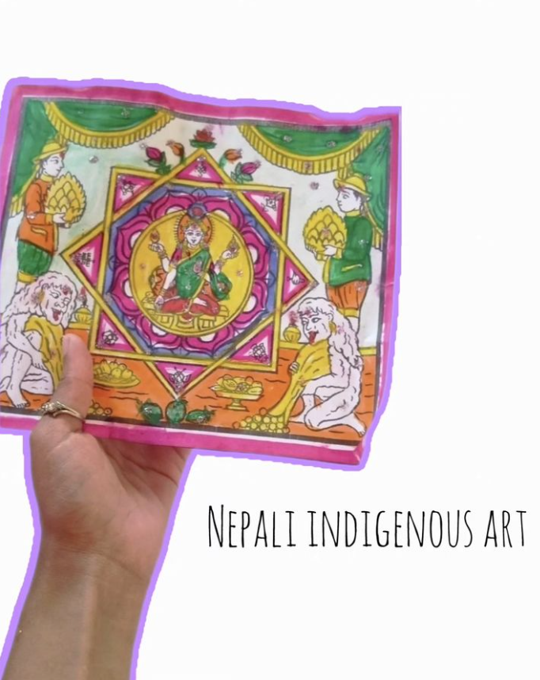

(2) A Search For Home
Saturday, Feb 3, 2024
Poem

(3) Celestial Bodies
i want to make a city,
be in a city where Sherlock Holmes & Conan Doyle lived,
The Baker Street,
a small shop with old uncle in his round specs,
blue striped apron selling fresh breads,
where i can buy my favourite croissants,
a trumpet busking some distance away from the green wooden bench i sit,
rolleiflex or hasselblad on hand and a tiny pocket to hold my notebook and a pen to write,
kids playing, singing out loud,
YOLO,
trumpet uncle smiling looking at them,
where i discuss my music taste with the kind bread shop uncle
over our favourite Latte on brown copperish metal coffee mug,
and he shares his music schedule too,
that joy in his eyes as if he’s been sharing to his favourite grandchild,
(but) fortunately unfortunately strangely ,
therefore we’re been meeting like this,
we met.
(3) Celestial Bodies
का ध्वनि
Saturday, Feb 3, 2024
Poem


what is touch?,
what part of you is touch and what part of you understands touch?,
बगरमा बसेको अन्तरालको झरी कट्यो,
काटे,
सोही झरीलाई निराकर फैलाइराह्ने सोही खोला,
अनि बुने,
त्यही खोलाको बदनका तरङ्गमा मौनताको गाथा,
मेरो मन भित्रको आवाजले कागजका पानामा एकाएक आकार लिदई गयो,
म बसिरहे,
नियालिराहे,
चित्रकारले कोरेको विचित्र चित्र झै अक्षरका भाकामा गास्न पनि सिकायो उसले,
आफैलाई आफै नै,
touch को अर्थ बुझ्यो शायद उसले पनि अब,
touch को अर्थ बुझाइदियो शायद उसलाइ पनि अब,
कागजका पानाका ती स्पर्शले,
अनि फेरियो आकृति उसको,
पहाडको काप्चामा ठोकिएको जुन्किरिको अभिवृती झै,
कहिँ चन्द्रमाको छाँयाको आकृति त कहिँ घामको spectrum को कम्पित रुप,
फैलियो ज्यु भरी,
र फेरी एकमुष्ट परिणत भयो ऊ,
आफ्नै ताराको अस्तित्व मा,
आफ्नै त्यहि अस्तित्व नै स्पर्श ठम्याएर,
आफ्नै त्यहि touch नै अस्तित्व ठम्याएर।
(4) Ripples Weaved Through Eric Clapton's Music
Saturday, Feb 3, 2024
Poem
This is a comment from Eric Clapton's offical live of 'Wonderful Tonight'[source domain:youtube].These words had magic as i kept listening to that music while reading pausing to perceive how the writer's brain tangled and detangled several times to perceive the atmosphere of wonderful "night" Eric created
and now as a third person trying to configure two different minds, Wonderful Tonight feels like a different planet and that feels like magic.So, if i were to take this comment and elaborate as to how i soaked those things up as to how they soaked all up and blend everything and find a small corner for my style of writing too, i would write as below :
with a glass of whiskey in hand,
dusting out the cobwebs in imagination,
i realise to have finally understood
what Eric meant by how he meant,
how Eric felt what he felt,
the meaning the melody encompasses,
only now,
melody that succumbs disparity of melancholy,
melancholy that took me with her,
because it always had been me in her,
me in her i believe,
and the depth of its muse,
the more i listen to it in different places,
it changes,
its meaning changes
irrespective of the words it got defined by,
because meaning changed
by places it got re-defined by,
questioning the riveted innocence
of these ductile feelings,
feelings of the mature naivety,
naivety that does not withhold time as a dimension,
not that time ever had been,
but what time were you in then to have counted me in,
what time are you in now to long for counting me in,
maybe just the time i’ve put my hands into writing this,
maybe just the time i am writing this,
maybe that’s the time you’re currently in,
and hence we meet,
we meet again.
{ARTICLES}
(1) DAR-CHO
Saturday, Feb 18, 2024
Article

i) About Dar Cho:
Prayer flags are simple devices that, coupled with the natural energy of the wind, quietly harmonize the environment.
The five colours are associated with five elements earth, sky, fire, water and air.
White symbolises air, red is fire. Green is water, yellow is earth, and blue is wind.
They also represent directions - North, South, East, West and Center.
The reason why they are put high above the roof is so that they flutter in the wind. It is said that they emit positive vibrations and that the prayers are carried by the wind like silent prayers.
So, everything right from words to colours to prayers - these flags essentially carry our prayers via the wind to get them answered.
ii) About The Eyes of Buddha and Symbolised Meanings of his Whole Body :
Half-closed eyes show a state of meditation - looking outward and inward.
Elongated earlobes hear what's needed in the world. Hand gestures (called mudras) have different meanings, such as teaching or protection.
Furthermore, a dot on the forehead brings wisdom and a third eye to see unity. A full mouth indicates eloquent speech. Long arms signify generosity. White, slender fingers symbolize mindfulness, precision and purity in every act. Round heels represent an even temperament, and fine webs between toes and fingers signal interconnectedness.
(iii) About Mantras :
Mantra is a Sanskrit syllable that has the power to evoke energy.
Mantra is written in Ranjana Lipi or Tibetan Script , on the outside of the wheel.
" om mane padme hum "
OM - generosity
MANI - Jewel ( "Ma" ethics "Ni" patience )
PADME - Lotus ( "Pad" diligence "Me" renunciation )
HUM - Spirit of enlightenment / Wisdom
just as a lotus grows forth from mud but is not sullied by the faults of mud, so wisdom is capable of putting you in a situation of non-contradiction whereas there would be contradiction if you did not have wisdom,
wisdom that realizes the emptiness of inherent existence.
"om tare ttutare soha" This is Green Tara Mantra and Green Tara is a form of Buddha and symbolises the night. She is shown “in a posture of ease and readiness for action. While her left leg is folded in the contemplative position, her right leg is outstretched, ready to spring into action. Green Tara’s left hand is in the refuge-granting mudra (gesture); her right hand makes the boon-granting [giving] gesture. In her hands she also holds closed blue lotuses (utpalas), which symbolize purity and power.” And about the colour saffron, in Buddhism,
orange ( more precisely saffron) is considered the colour of illumination, the highest state of perfection. Scientifically, orange is a colour that provokes immediate reaction.In Southeast Asia, Buddhist monks wear orange robes that symbolize simplicity and letting go of materialism. So, all things collectively leading to Nirvana which means becoming extinguished or blowing out leaving all the worldly attachments.
(2) Cannabis Culture in Nepal
Wednesday, Feb 20, 2024
Article
the general tendency of thought process in Nepali society when people talk about cannabis or weed is very narrow (and narrow from perspective of the people who don't consume it and not generalising but most ) but i've always looked around to it from a different perspective even if i've never myself been high on substances,
researching and re-researching from sources on the internet, interviews and by deep conversations with people who consume such substances , and couldn't help myself but write about it because it breaks my heart everytime how negatively these cannabis consumers are portrayed just for the sake of some selfish motives plus outdated mindsets.
Hippie Culture in Nepal as flourishing the art influences :
starting off with hippies and hippie culture, i've always been fascinated by the word culture, be it street culture or anything that sets out itself to establish a different identity of itself, or the way it visions other things. Towards the end of 60s, youths in the West started leaving their countries in search of places that were calming, exotic and that would trigger their imagination, so Kathmandu became famous for that wordwide. People could smoke ganja freely in this country then and that's the main reason for it being so famous. There used to be flood of young people from the West wearing all kinds of dresses, dresses that were very picturesque and dramatic, the people who would feel and fill the streets perhaps, and those people being Hippies. They all used to go to Jhonche(Freak Street or Thamel) because there were small shops where they could buy ganja, later small shops even converted to restaurants. They used to bring books and also brought the possibility of opening contacts with the world outside and with all the understandings i've built up by travelling different streets so much, and based on my researches from scientific point of view too, the ones who consume psychedelics are ones who understand and love art because it has the power to distort the view of reality in one's mind, not saying just people consuming psychedelics have that level of thought process but i think its either very deep meditation or experiences or psychedelics.
And continuing with the topic, the Hippies came with art and music, and my favourite Bob Dylan was also introduced by the hippies.
The then King of Nepal had restrictions on many things but they allowed hippies to come to Nepal, allowed them to move freely, smoke ganja but then pressure came from American government and they banned free selling and smoking of ganja. The police had destroyed many ganja farms and so large amount of hippies left Nepal.
Now, the reason why weed in Nepal got banned is mainly due to the political aspect. The West wanted to stop the spreading of hippie culture because it was starting to be a threat to US and Europe's idea to have the controlling power or idea of domination. In UK, Europe and USA, many hippie were imprisoned and driven mad due to imprisonment under Anti-State Act and placed under psychological effect and were given a lot of unwanted drug to drive them mad. It was also against the advantage of hemp fiber against plastic and metal which was the part of major USA economy.
Economic and Environmental and Health Aspect :
Many people in the country consume psychedelic because it serves to them as pain relievers but most people don't understand that and it creates an extra pressure for them to live up according to the societal standards and i do not appreciate the act of "people in society" that create such space for them. They should be allowed to live their life, relieve their pain their way.
And based on studies, weed plant consumes a lot of carbon dioxide present in the air which is so essential for a city like Kathmandu that never fails to top the list of the most polluted cities in the world and the remedy to that, Nepal itself has such a thriving land condition for farming weed plant. And, not just national legalization but exporting such items to other nations with proper rules and supervision sector, the country can also make up to its decreasing GDP in the last two decades i believe.
Bob Marley and Nepal :
If you've travelled on public vehicles or ever strolled through alleys of Freak Street, you would possibly know how much of Nepal is filled with Bob Marley's posters and random tshirt-prints, even a barber's small shop will have his pictures, the back part of truck, just everything in general, to all the people who understand his music and even the one's who don't, Bob Marley is everywhere because Bob Marley was a spiritual hippie himself and no wonder good music (like reggae culture) and hippie have a deep relation to the aura and vibrations of Nepal.
Medicinal, Economic and Environmental aspects cannot be neglected for building a "society for all" with proper sense of growth and development conceived, but having focused on all the technical aspects, the recreational aspect too cannot be overlooked because for fresh and innovative mindsets, recreation is important and ofcourse it is a personal choice as to what forms of recreation one chooses but having said that, there's a very thin line between recreation and addiction and that must be understood and regulated by the consumer themselves plus the regulating bodies. And, exploring is choice but i do not appreciate the rising flex culture on this matter either because smoking to explore oneself is fine but to "look cool" or such stuffs is the actual matter that needs proper regulation because without legalization too, there are buyers and suppliers but if legalized with proper rules and regulations and supervising bodies, then such activities could be controlled to some extent.
so this is my observation and analysis to what i've observed over the time, and my part and way of respecting the street and documenting lives as i've always loved to.
(3) BHAIRAVS OF YENYA
Saturday, Feb 28, 2024
Article
The Story of Bhairavs in Yenya {Indra Jatra} has a deep resemblance with nature. Bhairav is considered as the fierce form of Lord Shiva and is believed to be the brother of the Living Goddess Kumari.
Different shades of the spectrum depicts differents forms of Bhairav.
(I) The shade White [ Swet Bhairav ] :
The first picture.He is associated with calmness and serenity symbolising peaceful and protective aspect of deity.
(II) The shade Blue [ Aakash Bhairav ] :
The second picture.He is associated with the sky or celestial realm.He represents the infinite and boundless aspect of divine. Lord Indra is considered Aakash Bhairav( the god of sky and thus rain).
(III) Shanta Bhairav [Majipa Lakhey] :
The third picture.The demon who cares. He is associated with affectionate silent nature.Majipa Lakhey Aaju is presented only during Yenya Punhi(the full moon night). He is believed to be protector of his children,children of the valley and is considered joyful form that brings good mood during the festival. "Majipa" is derived from Sanskrit "Manjupatta" meaning Manjushree City.
(IV) The shade Black [Kal Bhairav] :
He is associated with fierceness and fearsome attitude and is believed to be worshipped for protection and destruction of obstacles.
(4) LETTER TO DARJEELING, AN IMAGINARY.
Saturday, Feb 28, 2024
Article

I do not know, haven't still figured out what inspirations are to be honest, but this writing holds a little scoop of "inspiration" sort if i may say, drawn from Purna Rai's song title "A Love Letter to Darjeeling" and ofcourse Bipul Chhetri's album title "Sketches of Darjeeling", because those words just as i had my eyes on, articulated just as i would have wanted, the feelings i have had for that place, and will perhaps always have. So, definitely yeah! , "inspiration" i'd like to categorize it as.
Dear Darjeeling,
From Shreyansi to the Darjeeling she's never been! I don't know how your streets look, nor do i know how it feels, and not sure why, maybe because i haven't still seen it from my vantage point, so maybe not eligible yet to vouch for your impact, but i can sure share about the realm of your aura i have created in my mind. Your emptiness has everything, everything just. Music. Folk, Raps, Bands and Everything. Never has my search bar gone dry for Darjeeling-Sikkim songs. A. Bardewa, A. Gurung, P. Gajmer, B. Chhetri, J. Rai, M. East, just to name a few. "The Gifted Land of Musicians", they say, and why wouldn't they! And not just the music, the cinematography, cinematographers who've rightly understood to encapsulate the pace of emotions, that's you! When I think of Darjeeling, I think of evenings, a cosy tea shop with wooden benches at the gallis/alleys and hot steam coming out from the kettle, window seat by the train " darjeeling ko rail-garee", a foggy weather and flood of emotions, therefore a notebook and a pencil by my side, and write or just not but definitely dwell into thoughts, with thoughts, with hills. And more than anything, just the name - DARJEELING. That's what I've imagined you to be and have always envied people that belong to you, you belong to, imagined but not hoped and I believe there's a difference, minutely distinct ; so dear darjeeling, you are special, always have been.
STORIES OF PEOPLE
(1) Eid-Ul-Adha
Friday, Feb 3, 2024
Stories Of People
The contrasting white in pictures depict Sufism. The word ' Sufi ' means " man of wool ", so represents the mystical dimensions and there is a seperate beauty in just observing things perhaps.
Namaaz :
Everything is binded by words, and even the connect between what's there and what's not. So 'Salah' or Namaaz in Urdu are prayers for the believers, maybe because there is different kind of beauty in just believing in nothingness of the subconscious mind.
(2) Travelling Musicians
Saturday, Feb 3, 2024
Stories Of People
This Story features Narayan Gandharva(gainey dai) ;
sits on the floor,
holds सारङ्गी tight to his chest
with his chin resting on its upper part that clearly shows his love for "his सारङ्गी"
and starts singing.
Belonging to the Indo-Aryan ethnic group from the central hilly region of Nepal, Gainey reflects the beauty in Culture, Art and Music of Dalit Community of Nepal. Every street indeed has a story to tell and these musicians pave their path inculcating those different stories from surroundings in their music and therefore giving street culture a musical form.
(3) The Chitrakars
Friday, Feb 3, 2024
Stories Of People

Covered here is the story of indigenous artwork of Nepal.
Beauty of Chitrakars :
They say an icon only comes to life after once a Chitrakar paints its eyes. Chitrakar was/is a community dedicated to paintings and mask makings in the ancient Nepal ; however with the growing interest of people for different art forms, the crafting approach is now widespread among different communities, with the roots still belonging to the Chitrakars.
• Why should hand-painted artworks brought more to the scene now -
It started in 10th century during the Malla era.The printing works are not done by the offset printers,instead required design is carved on wood and then ink dipped rollers are used for finishing the final printwork.Apart from Cultural Aspect,such hand-painted artworks should be encouraged more because:
(i) eco-friendly
(ii)soulful artistry and creative appreciation
(iii)preserves uniqueness
(iv) affordable [you get in at Rs.20 at Patan and Ason Bazaar]
• About Artwork :
Here, Goddess Laxmi is seen holding Jwala on one hand and Nhyaka on the other[upper two hands]. Jwala [that has orange sindoor in it] indicates sun and Nhyaka means mirror. Hence,both together meaning a mirror encircled with the light of sun.
And,the white ape-like humanoid creatures on both sides is Khyah(ghost in Newa Community).This is a form of spirit that most Himalayan Cultures adhere to.They're considered guardians/protectors of the house.
And,the deity is seen within a cosmic geometrical pattern known as Shri Yantra meaning radiant mystical diagram that symbolizes the union of masculine and feminine energies.The triangles in concentric levels depicting the cosmos.The power-point(bindu) starts as the cosmic centre, encompassed by concentric circles with lotus petal patterns denoting creation and life force.
Not to miss out fascinating symmetry in the diagram.